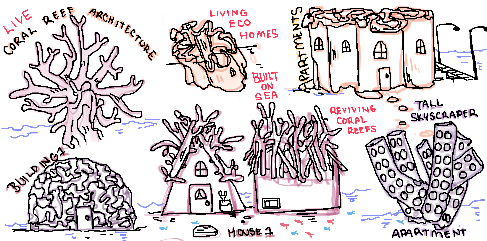
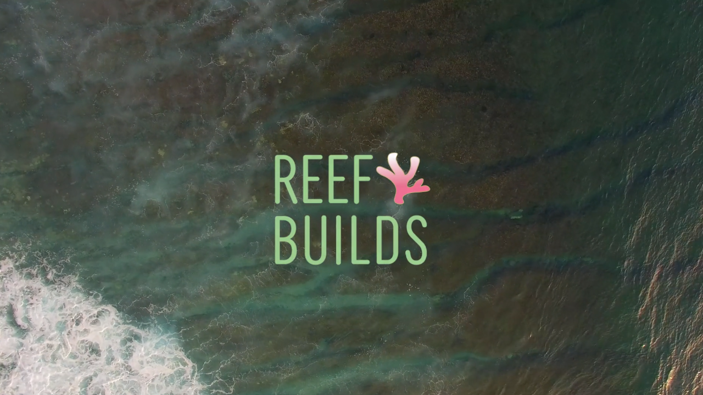

Original from Thingiverse.
Crystal and gemstones are used as alternative medicine and are used for their specific healing properties.
David Z idea 1: In a world where humans can only grow up to 3 feet tall, everything that humans have built would be 3 times smaller. This would mean that there would be more space in the world and all our buildings, tools, etc, would be a mini sized version of what we have right now.
David'ds Artifact: The Statue of Liberty but 3 x smaller than its original size.
Rachel's Artifact: Shorter doorways, doors.
David Z Idea 2: In a world where apples are purple inside, there exists purple apple pie, canned purple apples, etc.
David's Artifact: An apple cut in half with there being purple inside of it, or a purple apple pie.
Rachel's Artifact: Using the blue apples, can make dyed items like shirts.
Noor's idea: In a world of technology humans are all virtual reality
What if we live in a world with evolving technology, then now with AI we are slowly morphing into robots and questioning what is real and what is virtual. If we live a virtual world, then our reality is programed by an algorithm.
Noor's Artifact: a device that looks like a phone or glasses that serves as a portal between virtual reality and reality.
Rachel's Artifact: A technologically advanced mirror to see if your virtual or reality.
Rachel's Idea: In a world where clouds can be solid enough to jump and sleep on, fluffy
Possibility to build another city
People can sleep on the clouds. Can jump, play around in the clouds.
Airplanes need to be cautious, other animals like birds can chill there
Rachel's Artifact: shoe/boot that specialize in cloud jumping/terrain of clouds, walking on clouds, or pillows
My original idea about living in a world where clouds are solid enough to step on, look fluffy and comfy as they look. I thought of the possibility of how we have different footware for different terrain. (ie Snow shoes for walking on snow) I played with the idea about these sneakers being light weight, springy looking to jump on clouds. I called them Cloud9's.
Noor's idea was the possibility of having a world where corral was extinct, we would utilize the corral into everyday objects like cups and furniture. To take this idea further, I thought about how many coral reefs are used to house 2 million species of marine life. These corral reefs are used as homes and so I thought of playing with the idea of a world where artists, scientists, architects and engineers work together to create eco friendly corral reef homes built on the sea. These houses would grow on water and be built to the surface for humans to also live in as well. Its a habitat in which relies on both humans and nature.
It is somewhere in the future, coral reefs are close to extinction due to warming waters, pollution, and water acidification. Coral reefs are used as homes to two million species of marine life. There is an increase of human population, lack of housing, and global sea levels has risen high in the last two hundred years. Scientists, artists, engineers use biomimicry for nature inspired solutions to these issues. As a result, researchers are studying methods to grow corral in which can be made into household items and possibly even architecure in which both humans and nature rely on each other. These architecure can create more land and housing for both humans and nature. At the moment, researchers were able to build a corral archway.
We decided on name of our company Reef Builds to create the proposal designs and projects that Reef Builds plan on creating with coral. Also gives insight about how corral can be revived and be used for sustainable design.
It is the year 2,120, Earth’s sea levels have risen significantly in the last 100 years with water pushing inland. The world is overpopulated with 13 billion people and counting. Coral reefs, being the habitat of 25% of marine animals, are a major resource for human food, income, and protection from devastating waves. As of today, global warming has decimated roughly 90% of the earth’s coral reefs. At Reef Builds, we’re dedicated to the revival of coral reefs to rebuild the world for generations to come. Reef Builds employs scientists, engineers, and designers who push boundaries to find innovative ways to grow coral, an essential resource for animals and humans alike. Our researchers are able to extract ancient ice cores and genetically modify modern coral’s DNA to grow and thrive in harsh environments. We strive to construct coral into everyday objects, and eventually build eco friendly housing for humans and marine animals. Three of our designers are here to present their concepts of how corral can provide significant innovations for new living.
I've actually never really worked with after affects before and was my first time doing text animations. It was such a rewarding experience. Though, I was sacraficing so much sleep and time to learn how to do different text motion effects. I'm sorta feeling a little afraid of using after affects. I really want to make more motion graphics.
corral eco building
arch starting point of build
Noor
Rachel
David